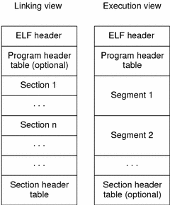

Linux Scrap
Table of Contents
- 1 Linux 服务器初步配置
- 2 Linux 启动流程
- 3 inode 入门
- 4 systemd 入门（未完成）
- 5 Unix 目录结构的来历
- 6 Linux 系统负荷
- 7 用户态与内核态
- 8 Unix 版权史
- 9 5 simple ways to troubleshoot using Strace
- 10 How to find out if a system uses SysV, Upstart or Systemd
- 11 Shared Libraries: Understanding Dynamic Loading
- 11.1 Shared Library
- 11.2 Example Setup
- 11.3 Compiling Shared Library
- 11.4 Compiling and Linking Dynamic Executable
- 11.5 ELF (Executable and Linkable Format)
- 11.6 Direct Dependency
- 11.7 Runtime Search Path
- 11.8 Fixing Dependency
- 11.9
rpathandrunpath - 11.10
$ORIGIN - 11.11 Runtime Search Path Security
- 11.12 Debugging Cheat Sheet
- 11.13 Links
1 Linux 服务器初步配置
1.1 登录
$ ssh root@128.199.209.242
$ passwd
1.2 添加用户
$ addgroup admin
$ useradd -d /home/foo -s /bin/bash -m foo
$ passwd foo
$ usermod -a -G admin foo
$ visudo foo ALL=(ALL:ALL) ALL foo ALL=(ALL) NOPASSWD: ALL # sudo 时不需要输入密码，不安全
$ exit $ ssh foo@128.199.209.242
1.3 SSH
首先，确定本地有 SSH 公钥，一般是 ~/.ssh/id_rsa.pub ，如果没有的话，使用 ssh-keygen 命令生成一个。
$ cat ~/.ssh/id_rsa.pub | ssh foo@128.199.209.242 'mkdir -p .ssh && cat - >> ~/.ssh/authorized_keys'
$ echo "ssh-rsa <public key>" > ~/.ssh/authorized_keys
$ sudo chmod 600 ~/.ssh/authorized_keys && chmod 700 ~/.ssh/
$ sudo cp /etc/ssh/sshd_config ~ $ sudo nano /etc/ssh/sshd_config Port 25000 # 修改默认端口 Protocol 2 PermitRootLogin no # 禁止 root 用户登录 PermitEmptyPasswords no PasswordAuthentication no # 禁止密码方式登录 RSAAuthentication yes PubkeyAuthentication yes AuthorizedKeysFile .ssh/authorized_keys UseDNS no AllowUsers foo # 指定允许登录的用户
$ sudo service ssh restart # 或 $ sudo /etc/init.d/ssh restart
Host h1 HostName 128.199.209.242 User foo Port 25000
$ ssh h1
1.4 运行环境
$ locale
$ sudo locale-gen en_US en_US.UTF-8 en_CA.UTF-8 $ sudo dpkg-reconfigure locales
$ sudo apt-get update $ sudo apt-get upgrade
1.5 安全
根据需要进行安全设置，比如搭建防火墙，关闭 HTTP、HTTPs、SSH 以外的端口，安装 Fail2Ban，可参考 Securing a Linux Server。
2 Linux 启动流程
计算机的启动在 BIOS 和主引导记录阶段涉及操作系统，只与主板的板载程序有关。在 BIOS 阶段，计算机的行为基本上被写死了，程序员可以做的事情并不多。但是，一旦进入操作系统，程序员几乎可以定制所有方面。下面以 Debian 为例，介绍操作系统接管硬件以后的启动流程。
2.1 加载内核
操作系统接管硬件以后，首先读入 /boot 目录下的内核文件。
2.2 初始化进程
内核文件加载以后，就运行第一个程序 /sbin/init ，初始化系统环境。init 是第一个运行的程序，进程编号（pid）是 1，其他所有进程都是它的子进程。
2.3 运行级别
许多程序需要开机启动，它们在 Windows 叫做「服务」（service），在 Linux 叫做「守护进程」（daemon）。
init 进程的一大任务，就是运行开机启动的程序。 但是，不同的场合需要启动不同的程序，比如用作服务器时，需要启动 Apache，用作桌面就不需要。Linux 允许 为不同的场合，分配不同的开机启动程序，叫做「运行级别」（run-level）。 也就是说，启动时根据运行级别，确定要运行哪些程序。Linux 预置 7 种运行级别（0~6） 。一般来说：
- 0：关机
- 1：单用户模式（维护模式）
- 2 ~ 5：多用户模式（正常模式）
- 6：重启
id:2:initdefault: # 系统启动时的默认运行级别为 2
/etc/rc0.d # rc = run command, d = directory /etc/rc1.d /etc/rc2.d /etc/rc3.d /etc/rc4.d /etc/rc5.d /etc/rc6.d
$ ls /etc/rc2.d README S01motd S13rpcbind S14nfs-common S16binfmt-support S16rsyslog S16sudo S17apache2 S18acpid ...
除了 README 以外，其他文件名都是「S + 两位数字 + 程序名」的形式。字母 S 表示启动脚本的运行参数为 start ，如果这个位置是字母 K，就代表 kill ，即如果从其他运行级别切换过来，需要关闭的程序（启动脚本的运行参数为 stop ）。后面的两位数字表示处理顺序，数字越小越早处理，所以第一个启动的程序是 motd，然后是 rpcbing、nfs 等。数字相同时，则按照程序名的字母顺序启动，所以 rsyslog 会先于 sudo 启动。
这个目录里的所有文件（除了 README ）就是启动时要加载的程序。如果想增加或删除某些程序，不建议手动修改 /etc/rc*.d 目录，最好用专门命令进行管理（参考 Manage Linux init or startup scripts 和 Remove Unwanted Startup Files or Services）。
2.4 开机启动程序
如果多个运行级别需要启动同一个程序，那么这个程序的启动脚本，就会在每一个运行级别的目录里都有一个拷贝。这样会造成管理上的困扰：如果要修改启动脚本，岂不是每个目录都要改一遍？Linux 的解决办法是 7 个 /etc/rc*.d 目录里列出的程序都是链接文件，真正的启动脚本统一放在 /etc/init.d 目录下。 init 进程逐一加载开机启动程序，其实是运行这个目录里的启动脚本。
$ ls -l /etc/rc2.d README S01motd -> ../init.d/motd S13rpcbind -> ../init.d/rpcbind S14nfs-common -> ../init.d/nfs-common S16binfmt-support -> ../init.d/binfmt-support S16rsyslog -> ../init.d/rsyslog S16sudo -> ../init.d/sudo S17apache2 -> ../init.d/apache2 S18acpid -> ../init.d/acpid ...
这样做的另一个好处，就是如果要 手动关闭或重启某个进程，直接到目录 /etc/init.d 中寻找启动脚本 即可。
$ sudo /etc/init.d/apache2 restart
2.5 用户登录
一般来说，用户的登录方式有三种：
- 命令行登录
- SSH 登录
- 图形界面登录
这三种情况，都有自己的方式对用户进行认证。
- 命令行登录：init 进程调用 getty（get teletype），让用户输入用户名和密码。输入完成后，再调用 login 程序，核对密码（Debian 还会再多运行一个身份核对程序
/etc/pam.d/login）。如果密码正确，就从文件/etc/passwd读取该用户指定的 shell，然后启动 shell。 - SSH 登录：这时系统调用 sshd （Debian 还会再运行
/etc/pam.d/ssh），取代 getty 和 login ，然后启动 shell。 - 图形界面登录：init 进程调用显示管理器，Gnome 图形界面对应的显示管理器为 gdm（GNOME Display Manager），然后用户输入用户名和密码。如果密码正确，就读取
/etc/gdm3/Xsession，启动用户的会话。
2.6 Login shell
所谓 shell，简单说就是命令行界面，让用户可以直接与操作系统对话。用户登录时打开的 shell，就叫做 login shell。Debian 默认的 shell 是 Bash，它会读入一系列的配置文件。上一步的三种情况，在这一步的处理，也存在差异。
- 命令行登录：首先读入
/etc/profile，这是对所有用户都有效的配置；然后依次寻找三个针对当前用户的配置， 这三个文件只要有一个存在，就不再读入后面的文件了：
~/.bash_profile ~/.bash_login ~/.profile
- SSH 登录：同上。
- 图形界面登录：只加载
/etc/profile和~/.profile。
2.7 Non-login shell
上一步完成以后，Linux 的启动过程就算结束了，用户已经可以看到命令行提示符或者图形界面了。用户进入操作系统以后，常常会再手动开启一个 shell，叫做 non-login shell，意思是它不同于登录时出现的那个 shell，不读取 /etc/profile 和 ~/.profile 等配置文件，而是 读取用户的 bash 配置文件 ~/.bashrc 。大多数时候，对于 bash 的定制，都是写在这个文件里面的。
如果不进入 non-login shell，岂不是 ~/.bashrc 就不会运行，因此 bash 也就不能完成定制了？Debian 已经考虑到这个问题了， ~/.profile 可以看到下面的代码：
if [ -n "$BASH_VERSION" ]; then if [ -f "$HOME/.bashrc" ]; then . "$HOME/.bashrc" fi fi
先判断变量 $BASH_VERSION 是否有值，然后判断主目录下是否存在 .bashrc 文件，如果存在就运行该文件。第三行开头的 . 是 source 命令的简写形式，表示运行某个文件，即 source ~/.bashrc 。因此，只要运行 ~/.profile ， ~/.bashrc 就会连带运行。但是上面提到过，如果存在 ~/.bash_profile ，那么有可能不会运行 ~/.profile 。解决这个问题很简单，把下面代码写入 .bash_profile 就行了。
if [ -f ~/.profile ]; then . ~/.profile fi
这样一来，不管是哪种情况， ~/.bashrc 都会执行，用户的设置可以放心地都写入这个文件。
Bash 的设置如此繁琐，是历史原因造成的。早期计算机运行速度很慢，载入配置文件需要很长时间，Bash 的作者只好把配置文件分成几个部分，阶段性载入。系统的通用设置放在 /etc/profile ，用户个人的、需要被所有子进程继承的设置放在 ~/.profile ，不需要被继承的设置放在 ~/.bashrc 。
3 inode 入门
inode 是一个重要概念，是理解 Unix/Linux 文件系统和硬盘储存的基础。理解 inode，不仅有助于提高系统操作水平，还有助于体会 Unix 设计哲学，即如何把底层的复杂性抽象成一个简单概念，从而大大简化用户接口。
3.1 inode 是什么？
文件储存在硬盘上，硬盘的最小存储单位叫做「扇区」（sector）。每个扇区储存 512 字节。
操作系统读取硬盘的时候，不会一个个扇区地读取，而是一次性连续读取多个扇区，即一次性读取一个「块」（block）。由多个扇区组成的「块」，是文件存取的最小单位。「块」的大小，最常见的是 4KB，即连续 8 个扇区。
文件数据都储存在「块」中，除此之外还必须有一个地方储存文件的元信息，比如文件的创建者、创建日期、大小等等。这种 储存文件元信息的区域就叫做 inode ，中文译名为「索引节点」。每一个文件都有对应的 inode。
3.2 inode 内容
inode 包含文件的元信息，具体来说有以下内容：
- 字节数
- 拥有者的 User ID
- Group ID
- 读、写、执行权限
- 时间戳，共有三个：
- ctime：inode 上一次变动的时间
- mtime：文件内容上一次变动的时间
- atime：文件上一次打开的时间
- 链接数，即有多少文件名指向这个 inode
- 文件数据 block 的位置
$ stat foo.bar File: ‘foo.bar’ Size: 92 Blocks: 16 IO Block: 4096 regular file Device: 811h/2065d Inode: 11274707 Links: 1 Access: (0740/-rwxr-----) Uid: (166645/alumapp2) Gid: ( 802/ a6) Context: unconfined_u:object_r:user_home_t:s0 Access: 2016-11-07 10:25:23.903727528 -0400 Modify: 2016-09-02 08:40:28.265492387 -0300 Change: 2016-09-02 08:40:34.875042038 -0300 Birth: -
3.3 inode 大小
硬盘格式化的时候，操作系统自动将硬盘分成两个区域：一个是数据区，存放文件数据；另一个是 inode 区（inode table），存放 inode 所包含的信息。
inode 也会消耗硬盘空间。每个 inode 节点的大小，一般是 128 字节或 256 字节。 inode 节点的总数，在格式化时就给定，一般是每 1KB 或每 2KB 就设置一个 inode。 假定在一块 1GB 的硬盘中，每个 inode 节点的大小为 128 字节，每 1KB 就设置一个 inode，那么 inode table 的大小就会达到 128MB，占整块硬盘的 12.8%。
$ df -i Filesystem Inodes IUsed IFree IUse% Mounted on /dev/sda1 960992 146095 814897 16% / tmpfs 1001351 568 1000783 1% /run /dev/sda3 512064 7123 504941 2% /var /dev/sda2 640848 4264 636584 1% /var/local ...
$ sudo dumpe2fs -h /dev/hda | grep "Inode size"
dumpe2fs 1.41.14 (22-Dec-2010)
Inode size: 256
由于每个文件都必须有一个 inode，因此 有可能发生 inode 已经用光，但是硬盘还未存满的情况。这时，就无法在硬盘上创建新文件。
3.4 inode 编号
每个 inode 都有一个编号， Unix/Linux 系统内部不使用文件名，而使用 inode 编号来识别文件。 对于系统来说，文件名只是 inode 号码便于识别的别称。表面上，用户通过文件名，打开文件。实际上，系统内部这个过程分成三步：
- 找到文件名对应的 inode 编号。
- 通过 inode 编号，获取 inode 信息。
- 根据 inode 信息找到文件数据所在的 block，读出数据。
$ ls -i foo.bar 11274707 foo.bar
3.5 目录文件
Unix/Linux 系统中，目录（directory）也是一种文件。打开目录，实际上就是打开目录文件。 目录文件的结构非常简单，就是目录项（dirent）的列表。 每个目录项，由两部分组成：
- 所包含文件的文件名
- 文件名对应的 inode 编号
$ ls -i foo 11274150 foo.1 11274149 foo.2 11274045 foo.3
如果要查看文件的详细信息，就必须根据 inode 编号，访问 inode 节点，读取信息。目录文件的读权限和写权限，都是针对目录文件本身。 由于目录文件内只有文件名和 inode 号码，所以如果只有读权限，只能获取文件名，无法获取其他信息，而读取 inode 节点内的信息需要目录文件的执行权限。
3.6 硬链接
文件名一般和 inode 编号一一对应，但 Unix/Linux 系统允许多个文件名指向同一个 inode 号码，即可以用不同的文件名访问同样的内容；对文件内容进行修改，会影响到所有文件名；但是删除一个文件名，不影响另一个文件名的访问。这种情况就被称为「硬链接」（hard link）。
建立硬链接时，inode 信息中有一项链接数，记录指向该 inode 的文件名总数，这时就会增加 1。反过来， 删除一个文件名，会使 inode 节点中的链接数减 1。当这个值减到 0，系统就会回收这个 inode 号码，以及其所对应 block 区域。
关于目录文件的链接数，创建目录时，默认会生成两个目录项：. 和 .. 。前者的 inode 编号是当前目录的 inode 编号，等同于当前目录的硬链接；后者的 inode 编号是当前目录的父目录的 inode 编号，等同于父目录的硬链接。所以，任何一个目录的硬链接总数，总是等于 2 加上它的子目录总数（含隐藏目录）。
3.7 软链接
除了硬链接以外，还有一种特殊情况： 文件 A 和文件 B 的 inode 编号不同，文件 A 的内容是文件 B 的路径。读取文件 A 时，系统会自动将访问者导向文件 B。 因此，无论打开哪一个文件，最终读取的都是文件 B。 文件 A 称为文件 B 的「软链接」（soft link）或者「符号链接」（symbolic link）。
这意味着， 文件 A 依赖于文件 B 而存在，如果删除了文件 B，打开文件 A 就会报错。文件 A 指向文件 B 的文件名，而不是文件 B 的 inode 编号，文件 B 的 inode 链接数不会增加。
3.8 inode 的特殊作用
由于 inode 编号与文件名分离，这种机制导致了一些 Unix/Linux 系统特有的现象。
- 如果文件名包含特殊字符，无法正常删除，直接删除 inode 节点，就能起到删除文件的作用。
- 移动或重命名文件，只改变文件名，不影响 inode 编号。
- 打开一个文件以后，系统就以 inode 编号来识别这个文件，不再考虑文件名。因此，通常来说，系统无法从 inode 编号得知文件名。这使得软件更新变得简单， 可以在不关闭软件的情况下进行更新，不需要重启。因为系统通过 inode 号码而不是文件名识别运行中的文件。更新的时候，新版文件以同样的文件名生成一个新的 inode，不会影响到运行中的文件。下一次运行这个软件的时候，文件名就自动指向新版文件，旧版文件的 inode 则被回收。
4 systemd 入门（未完成）
4.1 历史
历史上，Linux 的启动一直采用 init 进程。
$ sudo /etc/init.d/apache2 start $ service apache2 start
这种方式的缺点：
- 启动时间长。init 进程是串行的，前一个进程启动完，才会启动下一个进程。
- 启动脚本复杂。init 进程只执行启动脚本，不负责其他事情，脚本需要自己处理各种意外情况，使得脚本变得很长。
4.2 概述
systemd 就是为了解决 init 的问题而诞生的，它的设计目标是，为系统的启动和管理提供一套完整的解决方案。
根据 Linux 惯例，字母 d 是守护进程（daemon）的缩写，systemd 这个名字的含义，就是要守护整个系统。使用了 systemd，就不需要再用 init 了。 systemd 取代 initd 成为系统的第一个进程（PID = 1），其他进程都是它的子进程。
systemd 的优点是功能强大，使用方便，缺点是体系庞大，非常复杂。事实上，现在还有很多人反对使用 systemd，理由就是它 过于复杂，与操作系统的其他部分强耦合， 违反「keep it stupid simple」的 Unix 哲学。

4.3 系统管理命令
systemd 并不是一个命令，而是一组命令，涉及到系统管理的方方面面。
4.3.1 systemctl
systemctl 是 systemd 的主命令，用于管理系统。
$ sudo systemctl reboot # 重启 $ sudo systemctl poweroff # 关机（切断电源） $ sudo systemctl halt # CPU 停止工作 $ sudo systemctl suspend # 暂停系统 $ sudo systemctl hibernate # 休眠 $ sudo systemctl hybrid-sleep # 交互式休眠 $ sudo systemctl rescue # 救援状态（单用户状态）
4.3.2 systemd-analyze
systemd-analyze 命令用于查看启动耗时。
$ systemd-analyze # 查看启动耗时 $ systemd-analyze blame # 查看每个服务的启动耗时 $ systemd-analyze critical-chain # 显示瀑布状的启动过程 $ systemd-analyze critical-chain atd.service # 显示指定服务的启动过程
4.3.3 hostnamectl
hostnamectl 命令用于查看、设置主机信息。
$ hostnamectl # 显示当前主机的信息 $ sudo hostnamectl set-hostname rhel7 # 设置主机名
4.3.4 localectl
localectl 命令用于查看、设置本地化参数。
$ localectl # 查看本地化参数 $ sudo localectl set-locale LANG=en_GB.utf8 # 设置本地化参数 $ sudo localectl set-keymap en_GB
4.3.5 timedatectl
timedatectl 命令用于查看、设置当前时区、日期时间。
$ timedatectl # 查看当前时区设置 $ timedatectl list-timezones # 显示所有可用的时区 $ sudo timedatectl set-timezone America/New_York # 设置当前时区 $ sudo timedatectl set-time YYYY-MM-DD # 设置日期 $ sudo timedatectl set-time HH:MM:SS # 设置时间
4.3.6 loginctl
loginctl 命令用于查看当前登录的用户。
$ loginctl list-sessions # 列出当前会话 $ loginctl list-users # 列出当前登录用户 $ loginctl show-user foo # 列出显示指定用户的信息
5 Unix 目录结构的来历
Unix（包含 Linux）初学者常常会很困惑目录结构的含义。举例来说，根目录下有一个子目录 /bin ，用于存放二进制程序。但是， /usr 目录下也有 /usr/bin ，以及 /usr/local/bin ，也用于存放二进制程序；某些系统甚至还有 /opt/bin 。它们有何区别？
长久以来，我也不明白为什么这样设计，只是根据 Filesystem Hierarchy Standard 死记硬背不同目录的区别。昨天，我读到了 Rob Landley 的 Understanding the bin, sbin, usr/bin, usr/sbin split ，这才恍然大悟，原来 Unix 目录结构是历史造成的。
1969 年，Ken Thompson 和 Dennis Ritchie 在小型机 PDP-7 上发明了 Unix。1971 年，他们将主机升级到了 PDP-11。当时，他们使用一种叫做 RK05 的储存盘，容量大约是 1.5MB。
没过多久，操作系统（根目录）变得越来越大，一块盘已经装不下了。于是，他们加上了第二块 RK05，并且规定第一块盘专门放系统程序，第二块盘专门放用户自己的程序，因此挂载的目录点取名为 /usr 。也就是说，根目录 / 挂载在第一块盘， /usr 目录挂载在第二块盘。除此之外，两块盘的目录结构完全相同，第一块盘的目录（ /bin ， /sbin ， /lib ， /tmp 等）都在 /usr 目录下重新出现一次。后来，第二块盘也满了，他们只好又加了第三块 RK05，挂载的目录点取名为 /home ，并且规定 /usr 用于存放用户的程序， /home 用于存放用户的数据。
从此，这种目录结构就延续了下来。随着硬盘容量越来越大，各个目录的含义进一步得到明确。
/ |
存放系统程序，也就是 AT&T 开发的 Unix 程序 |
|---|---|
/usr |
存放 Unix 系统商（比如 IBM 和 HP）开发的程序 |
/usr/local |
存放用户自己安装的程序 |
/opt |
在某些系统下，用于存放第三方厂商开发的程序，所以取名为 optional |
6 Linux 系统负荷
6.1 查看系统负荷
在 Linux 系统中，一般使用 uptime 命令查看系统负荷（ w 命令和 top 命令也行）。
$ uptime 12:28:20 up 11 days, 5:27, 2 users, load average: 0.77, 0.68, 0.71
「平均负荷」的三个数字分别是 1 分钟、5 分钟、15 分钟内系统的平均负荷。
- 当 CPU 完全空闲的时候，平均负荷为 0
- 当 CPU 工作量饱和的时候，平均负荷为 1。
6.2 一个类比
下面根据 Understanding Linux CPU Load 这篇文章，来具体解释平均负荷的问题。
首先，假设最简单的情况，电脑只有一个 CPU，所有的运算都由这个 CPU 来完成。不妨把这个 CPU 想象成一座大桥，桥上只有一条车道，所有车辆都必须从这条车道上通过。
系统负荷为 0，意味着大桥上一辆车也没有。

系统负荷为 0.5，意味着大桥一半的路段有车。

系统负荷为 1.0，意味着大桥的所有路段都有车，也就是说大桥已经「满」了。但是必须注意的是，直到此时大桥还是能顺畅通行的。

系统负荷为 1.7，意味着车辆太多了，后面等着上桥的车辆为桥面车辆的 70%。以此类推，系统负荷 2.0，意味着等待上桥的车辆与桥面的车辆一样多。总之，当系统负荷大于 1，后面的车辆就必须等待了；系统负荷越大，过桥就必须等得越久。

CPU 的系统负荷，基本上等同于上面的类比。大桥的通行能力，就是 CPU 的最大工作量；桥梁上的车辆，就是一个个等待 CPU 处理的进程。
如果 CPU 每分钟最多处理 100 个进程，那么：
- 系统负荷 0.2，意味着 CPU 在这 1 分钟里只处理 20 个进程。
- 系统负荷 1.0，意味着 CPU 在这 1 分钟里正好处理 100 个进程。
- 系统负荷 1.7，意味着除了 CPU 正在处理的 100 个进程以外，还有 70 个进程正排队等着 CPU 处理。
很显然，1.0 是一个关键值，超过这个值，系统就不在最佳状态了，需要手动干预。
6.3 系统负荷的经验法则
1.0 是系统负荷的理想值吗？不一定，系统管理员往往会留一点余地，当这个值达到 0.7，就应当引起注意了。经验法则是这样的：
- 当系统负荷持续大于 0.7，必须开始调查，问题出在哪里，防止情况恶化。
- 当系统负荷持续大于 1.0，必须动手寻找解决办法，把这个值降下来。
- 当系统负荷达到 5.0，表明系统有很严重的问题，长时间没有响应，或者接近死机了。
6.4 多处理器
两个 CPU，意味着电脑的处理能力翻了一倍，能够同时处理的进程数量也翻了一倍。还是用大桥来类比，两个 CPU 就意味着大桥有两条车道了，通车能力翻倍了。

所以，两个 CPU 表明系统负荷可以达到 2.0，此时每个 CPU 都达到 100% 的工作量。推广开来，N 个 CPU 的电脑，可接受的系统负荷最大为 N.0。
6.5 多核处理器
芯片厂商往往在一个 CPU 内部，包含多个 CPU 核心，这被称为多核 CPU。
在系统负荷方面，多核 CPU 与多 CPU 效果类似，所以考虑系统负荷的时候，必须考虑这台电脑有几个 CPU、每个 CPU 有几个核心。然后， 把系统负荷除以总的核心数，只要平均值不超过 1.0，就表明电脑正常运行 。
cat /proc/cpuinfo 可以查看 CPU 信息。 grep -c 'model name' /proc/cpuinfo 可以返回 CPU 的总核心数。
6.6 最佳观察时长
最后一个问题， uptime 一共返回三个平均值：1 分钟、5 分钟、15 分钟系统负荷，应该参考哪个值？
如果只有 1 分钟的系统负荷大于 1.0，其他两个时间段都小于 1.0，这表明只是暂时现象，问题不大。如果 15 分钟内，平均系统负荷大于 1.0，表明问题持续存在，不是暂时现象。所以，应该 主要观察 15 分钟系统负荷，将它作为电脑正常运行的指标 。
7 用户态与内核态
- 内核态（kernel space）是 Linux 内核的运行空间。
- 用户态（user space）是用户程序的运行空间。
处于安全的考虑，它们是隔离的， 即使用户程序崩溃，内核也不受影响。
内核态可以执行任意命令，调用系统的一切资源。 用户态只能执行简单的运算，不能直接调用系统资源，必须通过系统调用（system call），才能向内核发出指令。
str = "my string" # 用户态 x = x + 2 file.write(str) # 切换到内核态（写文件必须通过内核） y = x + 4 # 切换回用户态
$ top %Cpu(s): 19.7 us, 2.4 sy, 0.0 ni, 77.4 id, 0.1 wa, 0.0 hi, 0.3 si, 0.0 st # | | # | +- CPU 消耗在内核态的时间百分比 # +----------- CPU 消耗在用户态的时间百分比
$ time ./test.sh real 0m0.018s # 程序运行的全部时间，包括 CPU 切换去执行其他任务的时间，是用户能感知到的时间 user 0m0.003s # 程序在用户态的执行时间 sys 0m0.005s # 程序在内核态的执行时间
- 单 CPU 的情况下，
user和sys之和一般小于real。 - 多 CPU 的情况下，
user和sys表示的是所有 CPU 的总耗时，所以它们的和可能大于real。
8 Unix 版权史
Unix 是贝尔实验室员工 Ken Thompson 的个人项目 ，诞生于 1969 年。 由于贝尔实验室是 AT&T（美国电话电报公司）的下属机构，所以 Unix 的版权归 AT&T 所有 。
AT&T 垄断了美国长途电话业务，所以美国司法部在 1958 年与它签了一个和解协议， AT&T 同意不进入计算机业， 不销售任何与计算机有关的产品，以避免司法部起诉它违反《反垄断法》。Unix 是计算机的操作系统，所以 AT&T 不能销售它， 任何要求得到源码的机构，都能免费得到 。
加州大学伯克利分校得到源码后，为 Unix 添加了许多功能。然后在 1979 年，加州大学伯克利分校推出了自家的 Unix 版本，取名为 Berkeley Software Distribution，简称 BSD 。
1974 年，美国司法部再次起诉 AT&T 违反《反垄断法》。1982 年，哥伦比亚地区法庭判决 AT&T 败诉，必须被拆成 8 家小公司 。但是，这个判决也意味着 1958 年的和解协议失效， AT&T 从此可以进入计算机业 。
1983 年，AT&T 发布了 Unix 最新版 System V，这是一个商业化版本，付费才能使用，并且不得传播源码。这个决定对 BSD 构成了限制，为了减少纠纷，伯克利分校规定，BSD 本身依然保持免费，但是只能提供给持有 AT&T 源码许可的公司。不过，与此同时，伯克利的师生也开始着手另一项工作：将 AT&T 的专有代码从 BSD 中逐渐去除。
80 年代后期，几个伯克利毕业的学生，成立了一家 Berkeley Software Design Inc. 公司，简称 BSDi，专门销售 BSD 的一个商业版本。他们在广告中宣称，自己的产品不包含任何 AT&T 代码。这句话惹恼了 AT&T，1990 年 BSDi 被告上法庭，稍后伯克利分校也被追加为被告。 AT&T 起诉 BSD 侵犯了 Unix 的版权 。
这场诉讼对 BSD 打击极大，所有的开发活动都被迫停止，用户人心惶惶，担心自己也遭到 AT&T 的追究，因此 BSD 的使用急剧减少。最后在 1994 年，双方达到和解，BSD 才恢复开发。
AT&T 与 BSD 之间的诉讼，是当代版权制度最恶劣的应用之一。
首先，起诉者其实与 Unix 毫无关系。这是 AT&T 经理层的决定，而不是开发者的决定。事实上，包括 Ken Thompson 在内的技术人员一直希望，公司能够公开源码。他们完全有理由这么要求，因为 Unix 从来不是 AT&T 的业务重点 ，最初是个人项目，后来也没有占用公司太多资源。销售 Unix 的利润，在公司全部业务中，几乎可以忽略不计。为了一点点钱，去打击一个使许多人受益的产品，何必这样做呢。
其次，AT&T 根本不关心 Unix 的发展。它真正关心的是金钱和削弱对手。 1994 年，官司还没有结束，AT&T 就把 Unix 卖给了 Novell 公司，从此不再与 Unix 发生关系 ，官司也因此不了了之。既然你不想要这个产品，为什么要提起诉讼呢？真是不可理解。
最后，所谓的侵权几乎是不存在的。因为 Novell 从 AT&T 买下 Unix 版权后，检查了 BSD 的源码，在 18000 个组成文件中删除了 3 个，并对其他文件做了一些小修改，然后 BSD 就重新获得了自由发布源码的许可。这意味着，至多只有千分之一的 BSD 代码有版权问题，但是就因为这千分之一的问题，导致百分之百的产品被迫中断。
所以，这场版权官司就是一家利益至上的公司，以微不足道的理由，为了一个自己根本不在乎的产品，悍然发动一场损人不利己的战争。
这场战争给 Unix 和 BSD 带来毁灭性的打击。
从 80 年代中后期开始，AT&T 固执地捍卫 Unix 版权，完全不顾它的创造者和开发者的愿望，导致 Unix 丧失活力、一蹶不振，大量开发者无法参与，只好离开了这个平台。
而 BSD 在 1992~1994 年期间，开发处于停滞，错过了发展的黄金时机。官司结束以后，又不幸发生分裂，变成了 FreeBSD、NetBSD 和 OpenBSD 三个版本。这些原因导致 BSD 直到今天，都还在操作系统的竞争中处在落后地位。
如果换个时间，官司的损失也许还没这么大。偏偏 90 年代初是计算机工业决定性的年代，错过了那几年，从此就不要想翻身了。因为从 80 年代末期开始，Intel 的 80x86 芯片有了巨大的发展，性能快速上升，成本快速下降，个人电脑的年代就要到来，市场迫切需要能够运行在 386 芯片上的操作系统 ， 但是 Unix 和 BSD 忙于打官司，都没有去做移植操作系统这件事。其他两个这样做的人，改变了人类历史。
一个是比尔·盖茨，他推出了 Windows，占领了个人电脑市场，后来赚了几百亿美元。另一个是 芬兰大学生 Linus Torvalds，他想学习 Unix，但是买不起工作站，就自己写了一个能在 386 上运行的 Linux 操作系统 ，现在全世界超过一半的网络服务器都在使用这个系统。
Linus Torvalds 后来说，如果他早知道 BSD 没有法律问题，并且可以被移植到 386，他就会加入 BSD 的开发，而不是自己写一个。如果 AT&T 不打版权官司、不对 Unix 收费的话，会发生什么事？人类的历史、市场的格局也许都会被改写。
Novell 买到 Unix 版权后，也没在手里放多久，1995 年又转手卖给了别人。从此， Unix 原始版本的开发正式结束。以后的发展集中在两个方向，一个是各个商业公司自己修改的 Unix 版本， 比如 Sun 的 Solaris，HP 的 HP-UX，IBM 的 AIX， 另一个则是开源项目的开发，比如 BSD 和 Linux。
9 5 simple ways to troubleshoot using Strace
9.1 What is strace?
Strace is quite simply a tool that traces the execution of system calls. In its simplest form it can trace the execution of a binary from start to end, and output a line of text with the name of the system call, the arguments and the return value for every system call over the lifetime of the process. But it can do a lot more:
- It can filter based on the specific system call or groups of system calls.
- It can profile the use of system calls by tallying up the number of times a specific system call is used, and the time taken, and the number of successes and errors.
- It traces signals sent to the process.
- It can attach to any running process by pid.
If you've used other Unix systems, this is similar to truss. Another (much more comprehensive) is Sun's Dtrace.
9.2 Find out which config files a program reads on startup
Ever tried figuring out why some program doesn't read the config file you thought it should? Had to wrestle with custom compiled or distro-specific binaries that read their config from what you consider the "wrong" location? The naive approach:
$ strace php 2>&1 | grep php.ini open("/usr/local/bin/php.ini", O_RDONLY) = -1 ENOENT (No such file or directory) # First try open("/usr/local/lib/php.ini", O_RDONLY) = 4 # Read config file lstat64("/usr/local/lib/php.ini", {st_mode=S_IFLNK|0777, st_size=27, ...}) = 0 readlink("/usr/local/lib/php.ini", "/usr/local/Zend/etc/php.ini", 4096) = 27 lstat64("/usr/local/Zend/etc/php.ini", {st_mode=S_IFREG|0664, st_size=40971, ...}) = 0
The more sophisticated approach if I only care about a specific syscall:
$ strace -e open php 2>&1 | grep php.ini open("/usr/local/bin/php.ini", O_RDONLY) = -1 ENOENT (No such file or directory) open("/usr/local/lib/php.ini", O_RDONLY) = 4
The same approach work for a lot of other things. Have multiple versions of a library installed at different paths and wonder exactly which actually gets loaded? etc.
9.3 Why does this program not open my file?
Ever run into a program that silently refuse to read a file it doesn't have read access to, but you only figured out after swearing for ages because you thought it didn't actually find the file? Well, you already know what to do:
$ strace -e open,access 2>&1 | grep filename # Look for open or access syscall that fails
9.4 What is that process doing right now?
Ever had a process suddenly hog lots of CPU? Or had a process seem to be hanging? Then you find the pid, and do this:
$ strace -p 15427
Process 15427 attached - interrupt to quit
futex(0x402f4900, FUTEX_WAIT, 2, NULL
Process 15427 detached
Ah. So in this case it's hanging in a call to futex(). Incidentally in this case it doesn't tell us all that much - hanging on a futex can be caused by a lot of things (a futex is a locking mechanism in the Linux kernel). The above is from a normally working but idle Apache child process that's just waiting to be handed a request. But strace -p is highly useful because it removes a lot of guesswork, and often removes the need for restarting an app with more extensive logging (or even recompile it).
9.5 What is taking time?
You can always recompile an app with profiling turned on, and for accurate information, especially about what parts of your own code that is taking time that is what you should do. But often it is tremendously useful to be able to just quickly attach strace to a process to see what it's currently spending time on, especially to diagnose problems. Is that 90% CPU use because it's actually doing real work, or is something spinning out of control. Here's what you do:
$ strace -c -p 11084 Process 11084 attached - interrupt to quit Process 11084 detached % time seconds usecs/call calls errors syscall ------ ----------- ----------- --------- --------- ---------------- 94.59 0.001014 48 21 select 2.89 0.000031 1 21 getppid 2.52 0.000027 1 21 time ------ ----------- ----------- --------- --------- ---------------- 100.00 0.001072 63 total
After you've started strace -c -p you just wait for as long as you care to, and then exit with Ctrl-C. Strace will spit out profiling data as above. In this case, it's an idle Postgres postmaster process that's spending most of it's time quietly waiting in select(). In this case it's calling getppid() and time() in between each select() call, which is a fairly standard event loop. You can also run this "start to finish", here with ls:
$ strace -c >/dev/null ls % time seconds usecs/call calls errors syscall ------ ----------- ----------- --------- --------- ---------------- 23.62 0.000205 103 2 getdents64 18.78 0.000163 15 11 1 open 15.09 0.000131 19 7 read 12.79 0.000111 7 16 old_mmap ... ------ ----------- ----------- --------- --------- ---------------- 100.00 0.000868 87 10 total
Pretty much what you'd expect, it spents most of it's time in two calls to read the directory entries (only two since it was run on a small directory).
9.6 Why can't I connect to that server?
Debugging why some process isn't connecting to a remote server can be exceedingly frustrating. DNS can fail, connect can hang, the server might send something unexpected back etc. You can use tcpdump to analyze a lot of that, but a lot of the time strace will give you less chatter, simply because it will only ever return data related to the syscalls generated by "your" process. If you're trying to figure out what one of hundreds of running processes connecting to the same database server does for example (where picking out the right connection with tcpdump is a nightmare), strace makes life a lot easier. This is an example of a trace of nc connecting to www.news.com on port 80 without any problems:
$ strace -e poll,select,connect,recvfrom,sendto nc www.news.com 80 sendto(3, "\\24\\0\\0\\0\\26\\0\\1\\3\\255\\373NH\\0\\0\\0\\0\\0\\0\\0\\0", 20, 0, {sa_family=AF_NETLINK, pid=0, groups=00000000}, 12) = 20 connect(3, {sa_family=AF_FILE, path="/var/run/nscd/socket"}, 110) = -1 ENOENT (No such file or directory) connect(3, {sa_family=AF_FILE, path="/var/run/nscd/socket"}, 110) = -1 ENOENT (No such file or directory) connect(3, {sa_family=AF_INET, sin_port=htons(53), sin_addr=inet_addr("62.30.112.39")}, 28) = 0 poll([{fd=3, events=POLLOUT, revents=POLLOUT}], 1, 0) = 1 sendto(3, "\\213\\321\\1\\0\\0\\1\\0\\0\\0\\0\\0\\0\\3www\\4news\\3com\\0\\0\\34\\0\\1", 30, MSG_NOSIGNAL, NULL, 0) = 30 poll([{fd=3, events=POLLIN, revents=POLLIN}], 1, 5000) = 1 recvfrom(3, "\\213\\321\\201\\200\\0\\1\\0\\1\\0\\1\\0\\0\\3www\\4news\\3com\\0\\0\\34\\0\\1\\300\\f"..., 1024, 0, {sa_family=AF_INET, sin_port=htons(53), sin_addr=inet_addr("62.30.112.39")}, [16]) = 153 connect(3, {sa_family=AF_INET, sin_port=htons(53), sin_addr=inet_addr("62.30.112.39")}, 28) = 0 poll([{fd=3, events=POLLOUT, revents=POLLOUT}], 1, 0) = 1 sendto(3, "k\\374\\1\\0\\0\\1\\0\\0\\0\\0\\0\\0\\3www\\4news\\3com\\0\\0\\1\\0\\1", 30, MSG_NOSIGNAL, NULL, 0) = 30 poll([{fd=3, events=POLLIN, revents=POLLIN}], 1, 5000) = 1 recvfrom(3, "k\\374\\201\\200\\0\\1\\0\\2\\0\\0\\0\\0\\3www\\4news\\3com\\0\\0\\1\\0\\1\\300\\f"..., 1024, 0, {sa_family=AF_INET, sin_port=htons(53), sin_addr=inet_addr("62.30.112.39")}, [16]) = 106 connect(3, {sa_family=AF_INET, sin_port=htons(53), sin_addr=inet_addr("62.30.112.39")}, 28) = 0 poll([{fd=3, events=POLLOUT, revents=POLLOUT}], 1, 0) = 1 sendto(3, "\\\\\\2\\1\\0\\0\\1\\0\\0\\0\\0\\0\\0\\3www\\4news\\3com\\0\\0\\1\\0\\1", 30, MSG_NOSIGNAL, NULL, 0) = 30 poll([{fd=3, events=POLLIN, revents=POLLIN}], 1, 5000) = 1 recvfrom(3, "\\\\\\2\\201\\200\\0\\1\\0\\2\\0\\0\\0\\0\\3www\\4news\\3com\\0\\0\\1\\0\\1\\300\\f"..., 1024, 0, {sa_family=AF_INET, sin_port=htons(53), sin_addr=inet_addr("62.30.112.39")}, [16]) = 106 connect(3, {sa_family=AF_INET, sin_port=htons(80), sin_addr=inet_addr("216.239.122.102")}, 16) = -1 EINPROGRESS (Operation now in progress) select(4, NULL, [3], NULL, NULL) = 1 (out [3])
So what happens here? Notice the connection attempts to /var/run/nscd/socket? They mean nc first tries to connect to NSCD - the Name Service Cache Daemon - which is usually used in setups that rely on NIS, YP, LDAP or similar directory protocols for name lookups. In this case the connects fails. It then moves on to DNS. DNS is port 53, hence the sin_port=htons(53) in the following connect. You can see it then does a sendto() call, sending a DNS packet that contains www.news.com. It then reads back a packet. For whatever reason it tries three times, the last with a slightly different request. My best guess why in this case is that www.news.com is a CNAME (an "alias"), and the multiple requests may just be an artifact of how nc deals with that. Then in the end, it finally issues a connect() to the IP it found. Notice it returns EINPROGRESS. That means the connect was non-blocking - nc wants to go on processing. It then calls select(), which succeeds when the connection was successful. Try adding read and write to the list of syscalls given to strace and enter a string when connected, and you'll get something like this:
read(0, "test\\n", 1024) = 5 write(3, "test\\n", 5) = 5 poll([{fd=3, events=POLLIN, revents=POLLIN}, {fd=0, events=POLLIN}], 2, -1) = 1 read(3, "\"-//IETF//"..., 1024) = 216 write(1, "\"-//IETF//"..., 216) = 216
his shows it reading "test + linefeed" from standard in, and writing it back out to the network connection, then calling poll() to wait for a reply, reading the reply from the network connection and writing it to standard out. Everything seems to be working right.
10 How to find out if a system uses SysV, Upstart or Systemd
One way is to check for the existence of three directories:
/etc/init.d |
SysV based system |
|---|---|
/usr/lib/systemd |
Systemd based system |
/usr/share/upstart |
Upstart based system |
These are heuristics that must be considered together, possibly with other data, not certain indicators by themselves. Ubuntu 14.10 has all three directories. Because Ubuntu switched to Systemd from Upstart, but keeps Upstart and SysV for backwards compatibility.
Ways to tell exactly which one is being used:
$ ps -p 1 PID TTY TIME CMD 1 ? ... systemd $ ll /sbin/init ... /sbin/init -> ../lib/systemd/systemd $ sudo stat /proc/1/exe File: ‘/proc/1/exe’ -> ‘/usr/lib/systemd/systemd’
11 Shared Libraries: Understanding Dynamic Loading
11.1 Shared Library
A library is a file that contains compiled code and data. Libraries in general are useful because they allow for fast compilation times (you don’t have to compile all sources of dependencies when compiling application) and modular development process.
Static libraries are linked into a compiled executable or another library. After compilation, the new artifact contains the static library’s content. Shared libraries are not linked into the compiled executable. They are loaded by the executable or other shared library at runtime.
11.2 Example Setup
The main file of the executable just calls a function from a random library.
#include "random.h" int main() { return get_random_number(); }
The random library defines a function in its header file.
int get_random_number();
And implementation in its source file.
#include "random.h" int get_random_number(void) { return 4; }
11.3 Compiling Shared Library
This example uses LLVM (clang) compiler instead of GCC to compile C++ code.
# Create object file from source file $ clang++ -o random.o -c random.cpp # -o <file> Output file # -c No linking, just compiling # Compile object file into shared library $ clang++ -shared -o librandom.so random.o # -shared Build shared library
Shared library files should be named lib<name>.so for them to link properly.
11.4 Compiling and Linking Dynamic Executable
# Create object file from source file $ clang++ -o main.o -c main.cpp # Create executable from object file $ clang++ -o main main.o Undefined symbols for architecture x86_64: "get_random_number()", referenced from: _main in main.o ld: symbol(s) not found for architecture x86_64 clang: error: linker command failed with exit code 1 (use -v to see invocation)
Linker throws error because the shared library is not being linked. It is possible to link the library statically, but we choose to dynamically link librandom.so to main.
$ clang++ -o main main.o -lrandom # -l<library> Link library, the target library file is "lib<library>.so" ld: library not found for -lrandom
Why does the compiler need this file at compile time when it is supposed to be loaded dynamically at runtime? Because the compiler needs to make sure that the dependent libraries contain all the symbols needed for the executable.
By using -l flag, we told compiler to look for a librandom.so file. We also need to tell compiler the location to search for this file, which can be done with -L flag:
$ clang++ -o main main.o -lrandom -L. # -L<path> Path to search for library
Run the executable:
$ ./main ./main: error while loading shared libraries: librandom.so ... No such file or directory
This error means a dependency can’t be located. It is thrown before the execution of the actual code, because shared libraries are loaded before symbols in the executable. Now the questions:
- How does
mainknow it depends onlibrandom.so? - Where does
mainlook forlibrandom.so? - How to tell
mainthe location to look forlibrandom.soat runtime?
11.5 ELF (Executable and Linkable Format)
Executable file format under Mac OS is Mach-O, instead of ELF under Linux, so the tool
readelfdoesn't exist under Mac OS. Wikipedia | Comparison of executable file formats
The shared library and executable file format is called ELF (Executable and Linkable Format). In summary, an ELF file contains:
| ELF header | Specifies the size and number of segments/sections in the program/section header table |
|---|---|
| Program header table | Contains a list of segment headers |
| Section header table | Contains a list of section headers |
| Data | Data pointed to by the segment/section headers |
Program/section header tables consist of fixed size segment/section headers. Each header contain a pointer (an offset in the file) to the location of the segment/section body, which exists in the data part of the file.
The difference between segment and section is that, section is a part of a segment, or a segment contains multiple sections. The same data is referenced as either part of a segment or a section depending on the current context: sections are used when linking, and segments are used when executing.

Use readelf to read the ELF header of main:
$ readelf -h main ELF Header: Magic: 7f 45 4c 46 02 01 01 00 00 00 00 00 00 00 00 00 Class: ELF64 ... Type: EXEC (Executable file) ... Number of program headers: 9 Size of section headers: 64 (bytes) Number of section headers: 30 ...
And the program headers:
$ readelf -l main
Elf file type is EXEC (Executable file)
Entry point 0x400530
There are 9 program headers, starting at offset 64
Program Headers:
Type Offset VirtAddr PhysAddr
FileSiz MemSiz Flags Align
...
DYNAMIC 0x0000000000000de8 0x0000000000600de8 0x0000000000600de8
0x0000000000000210 0x0000000000000210 RW 8
...
Section to Segment mapping:
Segment Sections...
00
...
08 .init_array .fini_array .dynamic .got
And the section headers:
$ readelf -S main
There are 30 section headers, starting at offset 0x1930:
Section Headers:
[Nr] Name Type Address Offset
Size EntSize Flags Link Info Align
...
[21] .dynamic DYNAMIC 0000000000600de8 00000de8
0000000000000210 0000000000000010 WA 6 0 8
...
As you can see, an ELF file has a segment of type DYNAMIC in its program header table. The DYNAMIC segment owns a .dynamic section, which contains useful information to understand dynamic dependencies.
11.6 Direct Dependency
Use readelf to show all dynamic dependencies of main:
$ readelf -d main | grep NEEDED 0x0000000000000001 (NEEDED) Shared library: [librandom.so] 0x0000000000000001 (NEEDED) Shared library: [libstdc++.so.6] 0x0000000000000001 (NEEDED) Shared library: [libm.so.6] 0x0000000000000001 (NEEDED) Shared library: [libgcc_s.so.1] 0x0000000000000001 (NEEDED) Shared library: [libc.so.6]
Except librandom.so, there are 4 other shared libraries in the result, these are the dependencies that appear in all compiled shared library. Use objdump to see a similar result by specifying librandom.so:
$ objdump -p librandom.so | grep NEEDED NEEDED libstdc++.so.6 NEEDED libm.so.6 NEEDED libgcc_s.so.1 NEEDED libc.so.6
These libraries are:
libstdc++ |
Standard C++ library |
|---|---|
libm |
Library of basic math functions |
libgcc_s |
GCC (GNU Compiler Collection) runtime library |
libc |
C library, which defines system calls and basic facilities, e.g. open malloc printf exit |
11.7 Runtime Search Path
Use ldd to see recursive shared library dependencies of main, and their locations:
$ ldd main
linux-vdso.so.1 => (0x00007fff373d7000)
librandom.so => not found
libstdc++.so.6 => /lib64/libstdc++.so.6 (0x00007fa1b674e000)
libm.so.6 => /lib64/libm.so.6 (0x00007fa1b644c000)
libgcc_s.so.1 => /lib64/libgcc_s.so.1 (0x00007fa1b6236000)
libc.so.6 => /lib64/libc.so.6 (0x00007fa1b5e68000)
/lib64/ld-linux-x86-64.so.2 (0x00007fa1b6a55000)
Note librandom.so's location is not found, but not the others.
Each shared library in an executable's dependencies is searched in the following locations in order:
1. rpath |
Directories listed in the executable’s rpath |
|---|---|
2. LD_LIBRARY_PATH |
Directories in the LD_LIBRARY_PATH environment variable |
3. runpath |
Directories listed in the executable’s runpath |
4. /etc/ld.so.conf |
Directories in the file /etc/ld.so.conf |
5. /lib and /usr/lib |
Default system libraries (skipped if compiled with -z nodefaultlib) |
11.8 Fixing Dependency
Use ldd to see the search process of librandom.so when executing main:
$ LD_DEBUG=libs ldd main ... 48: find library=librandom.so [0]; searching 48: search path=/opt/rh/llvm-toolset-7/root/usr/lib64/tls/x86_64:/opt/rh/llvm-toolset-7/root/usr/lib64/tls:/opt/rh/llvm-toolset-7/root/usr/lib64/x86_64:/opt/rh/llvm-toolset-7/root/usr/lib64 (LD_LIBRARY_PATH) 48: trying file=/opt/rh/llvm-toolset-7/root/usr/lib64/tls/x86_64/librandom.so 48: trying file=/opt/rh/llvm-toolset-7/root/usr/lib64/tls/librandom.so 48: trying file=/opt/rh/llvm-toolset-7/root/usr/lib64/x86_64/librandom.so 48: trying file=/opt/rh/llvm-toolset-7/root/usr/lib64/librandom.so 48: search cache=/etc/ld.so.cache 48: search path=/lib64/tls/x86_64:/lib64/tls:/lib64/x86_64:/lib64:/usr/lib64/tls/x86_64:/usr/lib64/tls:/usr/lib64/x86_64:/usr/lib64 (system search path) 48: trying file=/lib64/tls/x86_64/librandom.so 48: trying file=/lib64/tls/librandom.so 48: trying file=/lib64/x86_64/librandom.so 48: trying file=/lib64/librandom.so 48: trying file=/usr/lib64/tls/x86_64/librandom.so 48: trying file=/usr/lib64/tls/librandom.so 48: trying file=/usr/lib64/x86_64/librandom.so 48: trying file=/usr/lib64/librandom.so ...
Note that librandom.so doesn't exist in any of these locations being searched. To fix this, the most ad-hoc way to solve this is to use LD_LIBRARY_PATH:
$ LD_LIBRARY_PATH=.
$ ./main
This fix is not portable. A better way is to put dependencies inside the file, via rpath and runpath.
11.9 rpath and runpath
rpath and runpath are optional entries in the .dynamic section of an executable. They are lists of directories. The difference is rpath is searched before LD_LIBRARY_PATH, while runpath is searched after.
To bake rpath into the executable:
$ clang++ -o main main.o -lrandom -L. -Wl,-rpath,. # -Wl,<arg>,<arg>... Pass comma separated arguments to linker
-Wl,-rpath,. means passing -rpath . to the linker. Or to do the same thing for runpath:
$ clang++ -o main main.o -lrandom -L. -Wl,--enable-new-dtags,-rpath,.
Check .dynamic section of main again:
$ readelf -d main | grep path 0x000000000000000f (RPATH) Library rpath: [.]
The downside of using . (the current working directory) as search path is that, it won't work when executing main from a different directory:
$ cd /tmp $ /home/cpp/main /home/cpp/main: error while loading shared libraries: librandom.so ...
An easy way to solve this is to copy librandom.so to a directory that is on the search path, e.g. /lib. Another way is, of course, to set rpath to be relative to the executable, instead of the current location.
11.10 $ORIGIN
Paths in rpath and runpath can be:
| Absolute | E.g. /path/to/my/libs |
|---|---|
| Relative to current working directory | E.g. . |
| Relative to executable | E.g. $ORIGIN |
$ORIGIN is not an environment variable, export ORIGIN=/path has no effect, it is always the directory in which the executable being executed is placed.
To use $ORIGIN in rpath:
$ clang++ -o main main.o -lrandom -L. -Wl,-rpath,"\$ORIGIN"
$ needs to be escaped in this case, because we don't want Shell to expand it here. Then check the executable data:
$ readelf main -d | grep path
0x000000000000000f (RPATH) Library rpath: [$ORIGIN]
$ ldd main | grep librandom
librandom.so => /home/cpp/./librandom.so (0x00007f4ef0f20000)
Now main works when being executed from any directory:
$ cd /tmp $ /home/cpp/main
11.11 Runtime Search Path Security
Linux user password hash is stored in /etc/shadow and it's root protected. But a non-root user can change his password with passwd. The reason is that passwd executable has the setuid bit set:
$ ls -l /usr/bin/passwd -rwsr-xr-x 1 root root 27832 Jun 10 2014 /usr/bin/passwd # ^--- The "setuid" bit is set for user execution.
A program with the setuid bit set is executed as the owner of that program, which in this example is root.
To demonstrate how this is relevant to the shared library, we move the library file to libs/librandom.so relative to main, and set the rpath accordingly:
$ clang++ -o main main.o -lrandom -L. -Wl,-rpath,"\$ORIGIN/libs" # librandom.so needs to be in the same path when compiling, otherwise # linker doesn't know where to find it $ ldd main | grep librandom librandom.so => /home/cpp/./libs/librandom.so (0x00007f8868973000) $ mkdir libs $ mv librandom.so libs $ ./main # main should execute without error
Turn on setuid bit for main and try execute it (as root):
$ sudo chown root main $ sudo chmod a+s main $ ./main ./main: error while loading shared libraries: librandom.so ... # rpath is not working $ LD_LIBRARY_PATH=./libs $ ./main ./main: error while loading shared libraries: librandom.so ... # LD_LIBRARY_PATH is not working either
This is because, for security reasons, when running an executable with elevated privileges, e.g. setuid and setgid, the search path list is different than normal: LD_LIBRARY_PATH, rpath and runpath are all ignored, because using these search path allows exploit of elevated privileges executable to run as root, see The GNU C library dynamic linker expands $ORIGIN in setuid library search path.
Basically, it allows someone to make the elevated privileges executable load custom library, which will run as root (or a different user), and running code as root pretty much gives people absolute control over the machine.
Therefore, if the executable needs to have elevated privileges, the dependencies need to be specified in absolute paths, or placed in the default locations, e.g. /lib.
11.12 Debugging Cheat Sheet
When seeing this error on running an executable:
$ ./executable ./executable: error while loading shared libraries: ...
Try these debugging steps:
- Check what dependencies are missing with
ldd <executable>. - Check if they are direct dependencies with
readelf -d <executable> | grep NEEDED. - Check if the libraries actually exist in the expected location.
- Check where dependencies are being searched with
LD_DEBUG=libs ldd <executable>. - To add a directory to the search:
- Add the directory to
LD_LIBRARY_PATHenvironment variable. - Add the directory to the executable or shared library’s
rpath(-Wl,-rpath,<dir>) orrunpath(-Wl,--enable-new-dtags,-rpath,<dir>). Use$ORIGINfor paths relative to the executable.
- Add the directory to
- If
lddshows that no dependencies are missing, check if the executable has elevated privileges. If so, use absolute paths for dependencies.
11.13 Links
- Oracle | Linker and Libraries Guide
- The GNU C Library (glibc)
- The Linux Documentation Project | Shared Libraries
- StackExchange | Where do executables look for shared objects at runtime?
- System V Application Binary Interface | Program Header
- The ELF format - how programs look from the inside
- Wikipedia | Comparison of executable file formats
- Clang command line argument reference | Linker flags